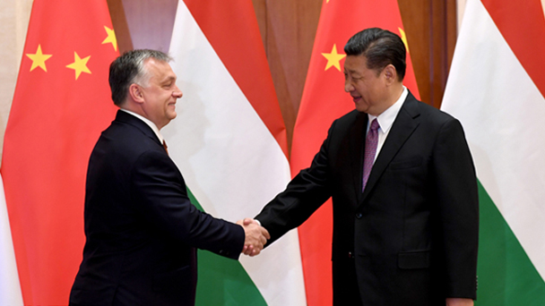

新华社北京5月13日电（记者李舒、白洁）国家主席习近平13日在钓鱼台国宾馆会见匈牙利总理欧尔班，宣布两国建立全面战略伙伴关系。
习近平欢迎欧尔班访华并出席“一带一路”国际合作高峰论坛。习近平指出，中匈建交68年来，两国关系始终健康发展。两国建立全面战略伙伴关系反映了双边关系发展现实，为双边合作开辟了广阔空间。双方要以此为契机，推动两国关系不断深入发展。作为全面战略伙伴，双方要坚持相互尊重。要加强“一带一路”倡议同匈方“向东开放”战略深度对接，加强全面合作顶层规划。要继续深挖合作潜力，继续推动匈塞铁路等大项目，拓展金融合作。要加强人文交流，扩大文化、教育、旅游、地方等领域合作。
习近平指出，中方坚定支持欧盟发展。中国－中东欧国家合作提升了中国同中东欧国家整体关系水平。中方愿同匈方一道，不断推进中国－中东欧国家合作和中欧全面战略伙伴关系发展。
欧尔班表示，匈中关系源远流长，匈方愿同中方一道推进匈中全面战略伙伴关系。匈牙利高度评价中国经济社会发展特别是脱贫攻坚取得的成就，认为中国市场经济地位不容置疑。匈方致力于深化同中方在基础设施、农业等领域合作，支持中国－中东欧合作和中欧关系发展。“一带一路”建设对各国都是重要机遇，匈方愿积极参与相关合作。
会见后，双方发表了《中华人民共和国和匈牙利关于建立全面战略伙伴关系的联合声明》。
王沪宁、栗战书、杨洁篪等参加会见。